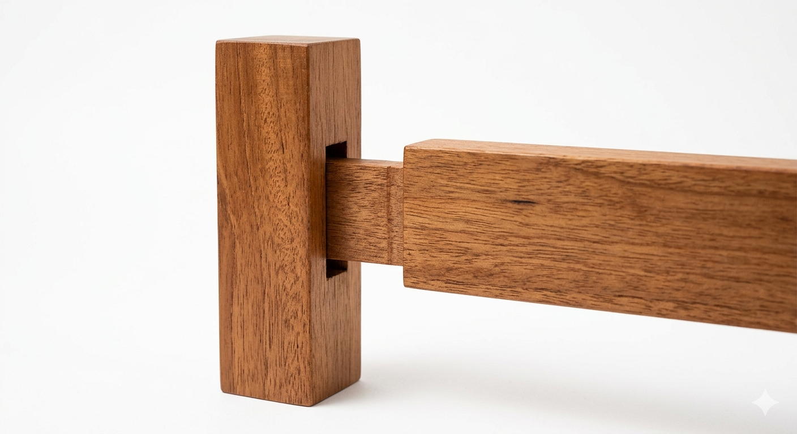

Selamat Datang ke WOODVERSE
KUASAI SENI TANGGAM KAYU MELALUI SIMULASI 3D
Pengalaman pembelajaran interaktif yang menggabungkan teknologi simulasi 3D dengan seni pertukangan kayu tradisional.
Mula Belajar →⌄ Skrol untuk meneroka

7Model 3D
Tanggam Kayu
Tanggam Kayu
4Nota
Pembelajaran
Pembelajaran
3Kuiz
Interaktif
Interaktif
100%Pembelajaran
Interaktif
Interaktif
Kenapa 3D?
Pengalaman yang Lebih Bermakna
Simulasi 3D membolehkan pelajar melihat, memutar dan memahami struktur tanggam kayu dengan lebih jelas sebelum menjalankan aktiviti amali sebenar.
7 Model Tanggam Kayu
Sedia untuk memulakan perjalanan anda?
Terokai, pelajari dan kuasai seni tanggam kayu melalui pengalaman 3D yang menarik.